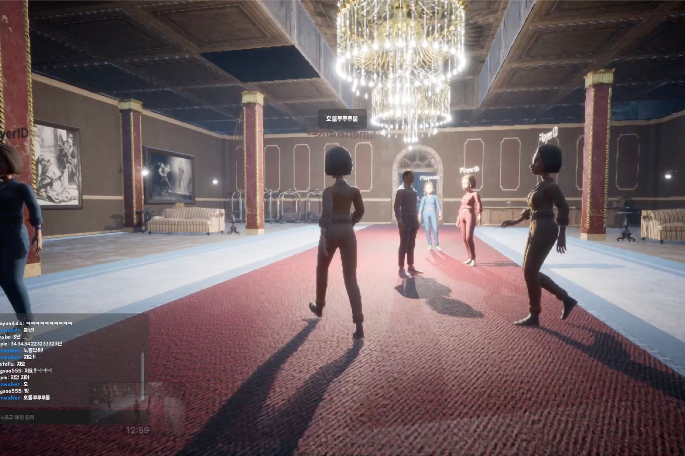
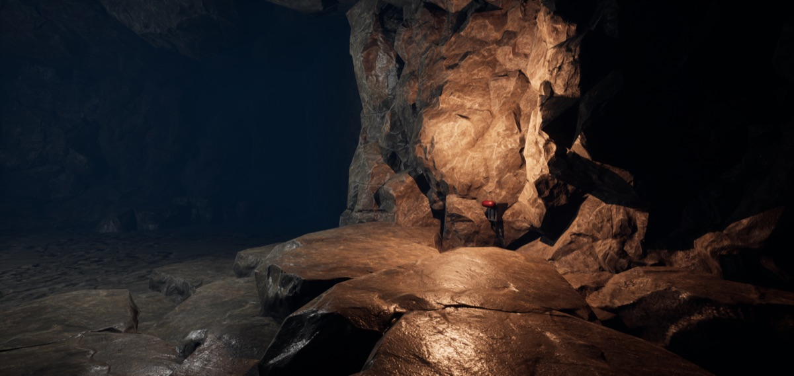
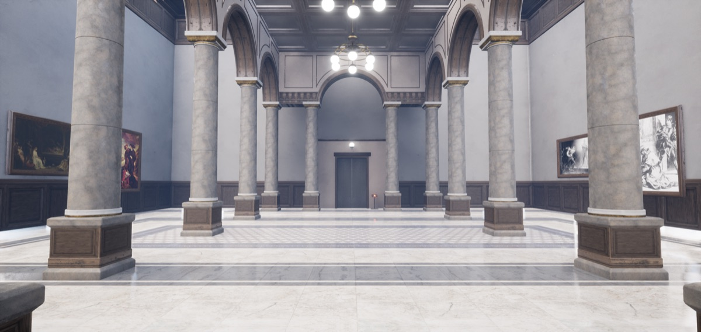
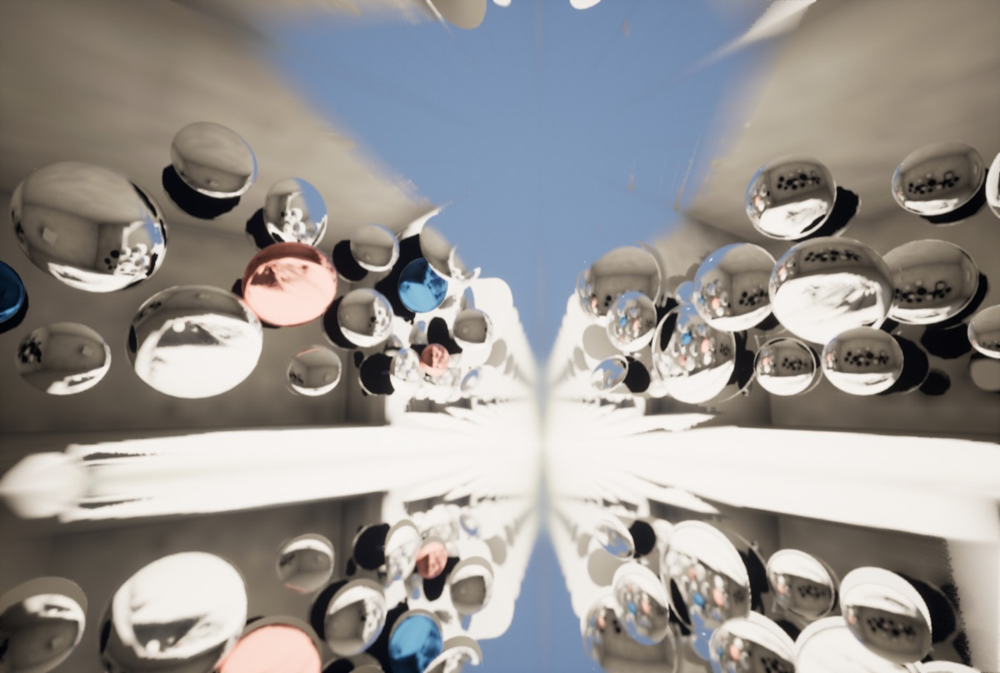
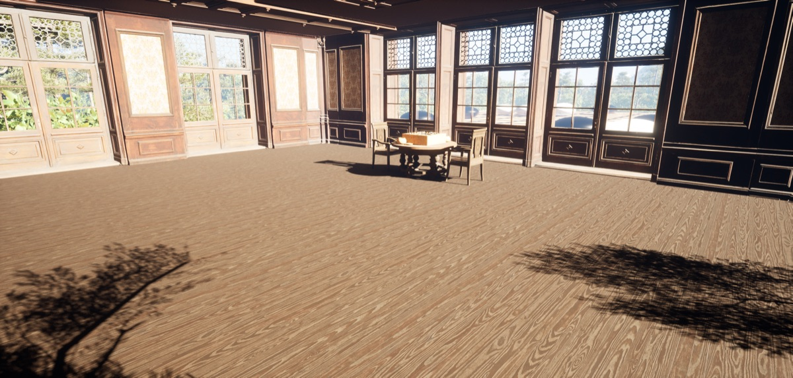
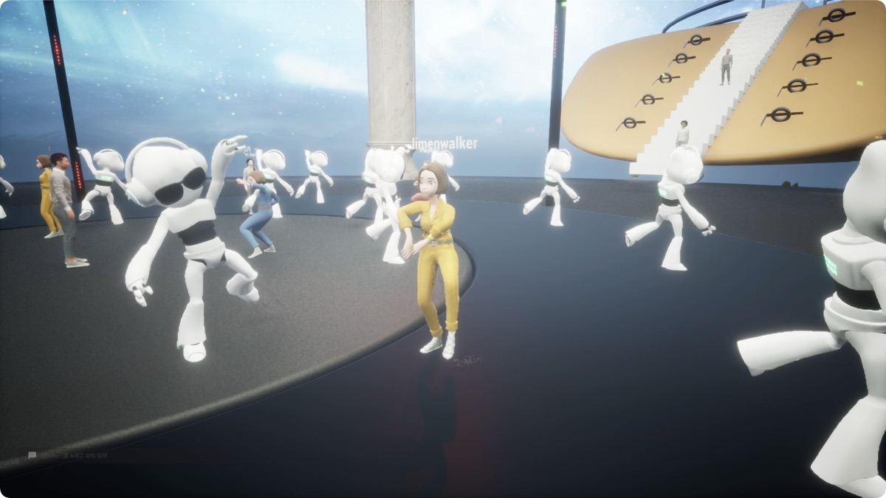
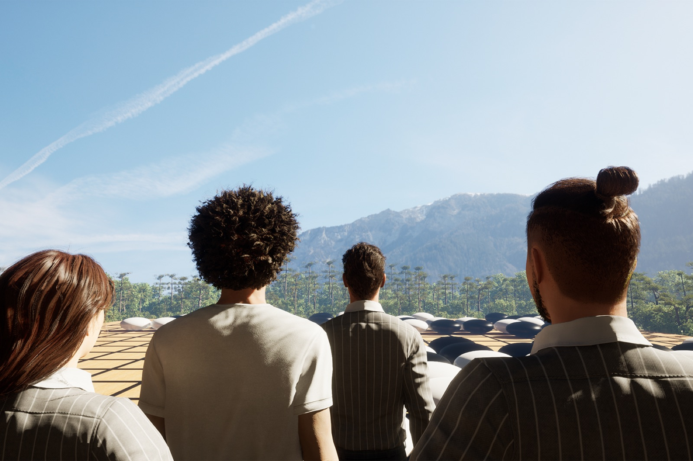
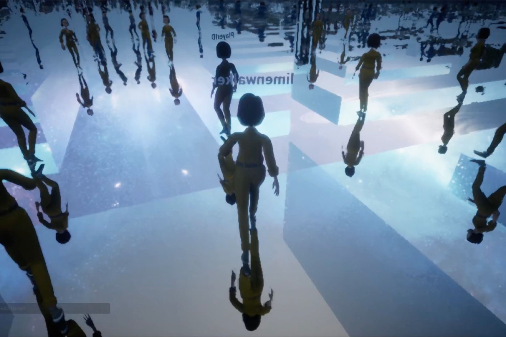
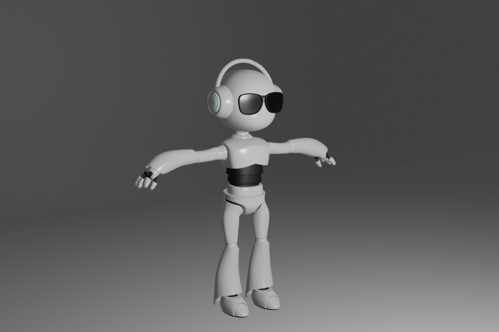

Performance — 2022
Liminal
Playground
메타버스 안에서 펼쳐지는 몰입형 연극. 관객은 지켜보는 대신, 게임처럼 자유롭게 참여하고 선택한다.
An immersive theater staged inside the metaverse — the audience doesn’t just watch, but plays.
‘Liminal Playground’는 메타버스에서 펼쳐지는 새로운 형식의 몰입형 연극입니다. 장소특정형 공연과 관객 참여형 공연의 특징을 결합해, 비선형적 서사를 통해 관객에게 다양한 경험과 자유로운 해석의 여지를 제공합니다. 자체 개발한 PC 기반 플랫폼 위에서 서로 다른 자유도를 지닌 다양한 참여 시나리오와 퀘스트를 설계했습니다.
퍼포먼스성과 유희성을 핵심 모티프로 삼아 게임화(gamification)를 새로운 차원으로 끌어올립니다. ‘유희하는 인간(homo ludens)’ 개념을 바탕으로 공연의 놀이성과 게임의 재미를 결합했으며, 관객은 관람자에 머무르지 않고 게임처럼 자율적으로 참여하고 상호작용합니다.
관객은 온라인으로 접속해 자신이 고른 아바타로 공연에 참여하고, 배우들은 실제 모습을 그대로 디지털 트윈한 버추얼 휴먼 아바타로 등장해 관객과 직접 소통합니다. 팬데믹으로 큰 타격을 입은 공연예술계에, 현실과 가상을 아우르는 비대면 공연 환경과 새로운 공연 형식의 가능성을 탐구하고 입증하려는 프로젝트이기도 합니다.
Liminal Playground combines the traits of site-specific and audience-participatory performance, using non-linear storytelling to offer open, varied experiences. With performativity and playfulness as its core motifs — drawing on the idea of homo ludens — it links the playfulness of performance with the fun theory of games. Audiences join online through avatars of their choosing, while the actors appear as virtual humans — digital twins of their real selves — communicating with the audience directly. Conceived in the wake of the pandemic, the project explores and demonstrates a new, non-face-to-face form of performance spanning the real and the virtual, closing with a celebration among AI-choreographed avatars.
- 연출·시나리오
- Direction & Scenario
- Kim Jae Min (김제민)
- 개발 디렉터
- Development Director
- Kim Dae Hong (김대홍, 4by4)
- 비주얼 아트 디렉터
- Visual Art Director
- Kim Daye (김다예, FFCE00)
- 스토리라이팅
- Story Writing
- Kim Tae-yong (김태용)
- AI ‘MADI’ 개발
- AI ‘MADI’
- Slitscope — Kim KeunHyoung · Kim Jae Min
- 출연
- Cast
- 김제민 · 김우진 · 이창재 · 최소연
- 키워드
- Keywords
- Metaverse · gamification · homo ludens · virtual human · AI choreography
공간 구성 — 다섯 개의 그라운드
Structure — Five Grounds
다섯 겹의 가상을 여행하다
A journey through five layers of the virtual
01
Shadow Ground

철학적 가상 — 첫 무대. 배우들의 연기를 따라 아바타 조작과 공연의 규칙을 익힌다.
Philosophical virtuality — the entry stage, where audiences learn to move their avatars through the actors’ storytelling.
02
Text Ground

기호적 가상 — 셰익스피어 《햄릿》과 얽힌 퀘스트를 수행하며 이야기를 경험한다.
Semiotic virtuality — storytelling unfolds through quests drawn from Shakespeare’s Hamlet.
03
Simulacre Ground

기술적 가상 — 거울 미로를 통과하며 실제와 가짜 이미지에 대한 이야기를 만난다.
Technological virtuality — a mirror-maze quest on real and false images.
04
Grid Ground

수학적 가상 — 이세돌과 알파고의 제4국을 재현한 바둑판 위에서 ‘신의 한 수’를 찾는다.
Mathematical virtuality — on a Go board replaying Lee Sedol vs AlphaGo, Game 4, audiences search for the ‘divine move.’
05
Black Ground

불가해적 가상 — 우주선을 타고 달의 저편으로. AI ‘MADI’가 안무한 아바타들의 축하공연에 관객도 함께 춤춘다.
Incomprehensible virtuality — beyond the far side of the moon, a celebration danced by MADI-choreographed avatars, with the audience joining in.
Technology
무대를 만든 기술
The technology behind the stage
메타버스 무대는 언리얼 엔진 5로 제작되었고, 빛의 반사·투과 표현에는 레이트레이싱을 활용했습니다. 고비용 서버 없이 다수의 관객이 동시 접속할 수 있도록 Steam 플랫폼의 네트워크 SDK를 연동했으며, 다양한 사양의 관객 컴퓨터에서도 원활히 구동되도록 그래픽은 실사풍에서 스타일라이즈드 방식으로 최적화했습니다. 배우들은 사진을 AI 캐릭터 툴과 3D 저작 도구로 정밀하게 다듬은 디지털 트윈, 곧 버추얼 휴먼으로 무대에 오릅니다.
마지막 무대의 군무는 자체 개발한 안무 생성 인공지능 MADI(MDN-based Artificial Dancing Intelligence)가 만들었습니다. LSTM과 혼합밀도네트워크(MDN)로 이루어진 딥러닝 모델로, 시작 동작이 주어지면 다음에 이어질 동작의 확률을 추산해 춤을 연속 생성합니다. MADI는 국립현대무용단 ‘비욘드 블랙’ 등의 작품에도 활용된 바 있습니다.
The metaverse stage was built in Unreal Engine 5 with ray-traced light, networked through the Steam platform SDK so that many audience members could join at once without costly servers, and optimized from photo-realistic to stylized graphics to run smoothly on ordinary computers. The actors appear as virtual humans — digital twins refined from photographs with AI character tools and 3D software. The closing dance was generated by MADI (MDN-based Artificial Dancing Intelligence), an in-house deep-learning model combining LSTM and mixture-density networks that estimates the probability of each next movement to generate continuous choreography — previously used in the Korea National Contemporary Dance Company’s ‘Beyond Black.’
- 엔진
- Engine
- Unreal Engine 5 · Raytracing · Steam SDK
- 기록
- Documentation
- 공연 영상 보기 ↗Watch the performance ↗
- 연출·기술감독 인터뷰 ↗Director & TD interview ↗
Metaverse, Arts Council Korea — 2022


